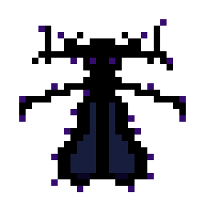
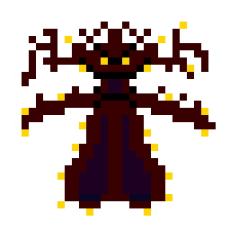

En este emocionante juego, el jugador se sumerge en un misterioso bosque donde acecha el "Unanswered", una criatura legendaria que ha eludido
a cazadores y exploradores durante generaciones. Sin embargo, en lugar de ser uno de los cazadores, aquí el jugador toma el control del monstruo.
Como el "Unanswered", tendrás que usar tus habilidades para burlar a los cazadores, aprovechando el entorno y las sombras para moverte sin ser visto.
A medida que los cazadores se acercan, tus decisiones serán cruciales para mantenerte a salvo y proteger tu existencia secreta.
Los jugadores experimentaran tres diferentes dificultades, cada una con sus propios desafíos, Además si logras completar la dificultad
Inmortal tu nombre aparecerá en nuestra página web! Este juego ofrece una experiencia emocionante y envolvente que pondrá a prueba tu astucia y
habilidad para sobrevivir. ¡Prepárate para adentrarte en la oscuridad y convertirte en la criatura que nadie puede atrapar!

En nuestro modo mas facil del juego, tienes la mison de matar a nuestros mas temidos enemigos que nos
atacarán con disparos que tendrmos que esquivar para sobrevivir.
En este modo tendremos 3 vidas para sobrevivir al ataque.

En nuestro ultimo modo de juego el nivell imposible, es aquell nivell en que te ves imposible de de pasarlo, por ello devemos tener mucha practica con los
nivelles anteriores para ganar a nuestros villanos.